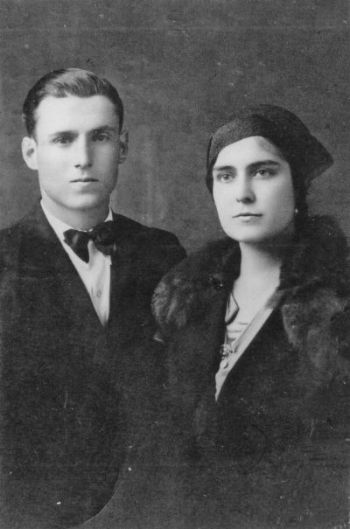
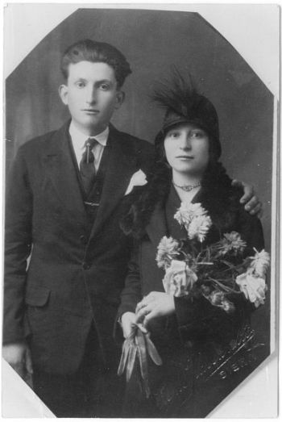

CECCARELLI (1960-1961); mezzadri; Castello.
Appena il nome della famiglia Ceccarelli, registrato da don Ottorino al Castello, dopo il Pistolesi e il Micheli e prima del Guideri. Forse vi abitarono nell'anno 1961.
CECCHERINI (1947 - 1955/56); mezzadri; Sornano.
Nel 1947 presero il posto dei Barbetti, e furono tra le ultime famiglie ad abitare a Sornano. Difficile stabilire l'anno della partenza da Sornano, comunque vi rimasero circa un decennio, ma non hanno lasciato né ricordi, né eventi registrati. Erano cinque persone, compreso il capoccio Alberto originario di Castiglion Fiorentino, che aveva con sé la moglie Lucia Dragoni, i figli Nella e Ivo, e il vecchio genitore Antonio. Forse provenivano da Monteroni, dove era nato Ivo a fine 1941.
CELLESI GIOVANNI (1902 - 1905/10); logaioli; Petroio.
Scarse le notizie di questo lavoratore agricolo che torna a Petroio il 3 marzo 1902. Nativo di Volterra, viveva con la moglie Giulia Bozzi e una bella nidiata di sette ragazzi che andavano dai 14 anni di Erminia alla coppia di gemelli Ernesto ed Ernesta di 4 anni, nati nel 1898. Certamente lavorava orti e terre per la Villa di Petroio, e non ci sono altre notizie se non la morte di Fortunato il 23 marzo 1904, appena nato. Nel 1914 lo troviamo sul territorio di Monteriggioni mentre si appresta, nel marzo, a trasferirsi nel comune di Colle, con la famiglia ridotta a sei persone.
CELLESI MODESTO (1905-1935); mezzadri; Castellare.
Contadini al Castellare per ben trenta anni, dei Cellesi si ricordano ancora tre persone: Gino, figlio di Vittorio, Dante di Modesto, ed Emilio. Erano giunti nel 1905 e partirono nel 1935, e non sembra ci siano legami di parentela con le altre famiglie Cellesi di fine Ottocento che dimorarono a Quercegrossa. Alla prima registrazione nel 1905 il capoccio è Modesto, figlio di Vincenzo e Caterina Turchi. Modesto è nato nel Comune di Siena, ed è padre di numerosi figli: Vittorio, Alfredo, Dante, Amelia, Erminda e Giulia. Dopo la perdita della prima moglie si è risposato con Clorinda Vivi, con la quale entra al Castellare all'età di 53 anni. Parte della famiglia, come gli zii Dante e ed Emilio, si devono essere ricongiunti al podere Castellare, non risultando al momento dell'arrivo. Vittorio ha sposato Giuseppa, la figlia di Desiderio Masti, e sarà Gino, suo figlio, che partirà per Siena nel 1935. Il vecchio Modesto era morto nel 1928, a 77 anni di vita, dopo che aveva sistemato le tre figlie in altrettanti matrimoni : Aurelia nel 1914, con un Donnini di Siena; Giulia nel 1921, con un Paolini di Basciano; Erminda nel 1925, maritata in Valli.
CENNINI (1921-1955); mezzadri; Monastero; da Radda.
Nel 1921 il podere di Monastero viene diviso. Ai Vegni si affiancano i Cennini, il cui ingresso è datato marzo 1921. Provengono da un podere del comune di Radda, ma le loro più antiche origini si trovano a Castellina in Chianti. Lì è nato nel 1867 il capoccio Antonio del fu Michele e della fu Maria Sani, e ora arriva a Monastero con la moglie Maria Antonelli ed i figli Michele (1905), Isolina (1902), Giuseppe (1910) e Luigi (1914).
Maria è figlia di Tommaso Antonelli e Filomena Telacci. Il nonno Filippo, il padre di Tommaso, a metà Ottocento è un calzolaio.
Facile ricostruire il percorso prima di Quercegrossa. Vengono da Radda dove è nato Luigi; Michele e Giuseppe, invece, sono nati a S. Donato in Poggio e tutti gli altri a Castellina in Chianti. Vennero in sei e quasi raddoppiarono in quindici anni: nel 1936, con a capo sempre Antonio, sono una famiglia di tredici persone. Isolina si è sistemata nel 1924 a Vagliagli sposando un Monnetti, e Luigi resterà celibe. Toccherà a Michele e Giuseppe rinsanguare i Cennini. Intanto, ricercando le antiche orme della famiglia a Castellina in Chianti, vediamo che vi fanno la loro prima comparsa sui registri di quella parrocchia nel 1841, e ci sono censite due famiglie Cennini. Quella dei futuri Cennini di Monastero coltiva il podere di Godenano di Sotto, ed è composta di dodici persone, con Fedele (1774) di 67 anni, capo di casa, che vive con due fratelli gemelli, David e Rosa, di 60 anni, e i numerosi figli tra cui Michele di 17 anni (1824). Da quanto tempo vivono a Castellina, o da dove provengono, per ora rimane un punto oscuro. Ma da qui in avanti la storia della famiglia diviene ben visibile. Vent'anni più tardi il capoccio è Giovanni, sposato, e Michele ha preso in moglie Maria Sani, e tra lui e il fratello stanno allevando diversi figlioli. Di Michele sono Ortenzia (1858), Anna (1861), Faustina (1864) e Antonio (1867). Un decennio dopo, con la morte di Michele, scomparso prematuramente, la vedova Maria si risposa, accasandosi altrove, ma lascia i figli con lo zio Giovanni, e dopo la morte di quest’ultimo sarà suo figlio Lorenzo ad assumere il comando. All'inizio del secolo non figura più Antonio, che ha messo su famiglia ed è tornato a S. Donato in Poggio dove Maria Antonelli gli ha partorito Michele. Questo è il primo dei fratelli al quale seguiranno Giuseppe e Luigi. Vivendo a Radda, nel 1920 Michele prese in moglie a Quercegrossa Emilia Simoncini di Poggiobenichi, e dovrebbe essere stato questo matrimonio il collegamento con il podere del Sarrocchi dove, come abbiamo visto, si trasferiscono l’anno successivo.


A sinistra:
Giuseppe Cennini e Rosa Barbucci.
A destra:
Michele Cennini ed Emilia Simoncini.
Anche Giuseppe, più tardi, prese una del popolo di Quercegrossa, anzi, nello stesso podere, sposando Rosa Barbucci nel 1934. Erano i Barbucci una famiglia di braccianti che dimorava in quel periodo a Monastero. Negli anni tra il 1927 e il 1942 i due matrimoni fruttificarono abbondantemente e si ebbero ben otto battesimi. Da Michele e Giulia nacquero Aldina (1927), Aldo, del 1930 e morto a 16 anni, Iris (1933), Santina (1933) e Giovanna (1942). Per Giuseppe e Rosa si incominciò con Marina (1935), Marino (1938), Caterina (1940), Armando, nato il 12 settembre 1944 e battezzato il 17, avendo come madrina Adriana Barbucci, per finire con le gemelle Lucia e Maria, nate il 20 gennaio 1948 e Donatella, l’ultima della famiglia, battezzata a Quercegrossa il 18 ottobre 1954, madrina sempre Adriana Barbucci. Passata la guerra, Antonio, l'ultimo nato a Castellina, moriva nel 1946. Come era facile presumere in una famiglia con sei ragazze, al tempo giusto prese il via la stagione dei matrimoni: Aldina all’età di 22 anni, nel 1949, si unì con un Fonterossi di Lilliano; nel 1953 Iris (23) sposò un Panfili e nel 1955 Marina di 20 anni prese Giulio Carli di Petroio. Quest'ultimo matrimonio fu anche l'ultima registrazione anagrafica a Quercegrossa. Con la morte del Sarrocchi, Passeggeri non dava più nessuna garanzia, e i Cennini si guardarono intorno per cambiare aria. Ci pensò per loro il mediatore Dino Guarducci, che si fece premura di avvisarli subito per il nuovo podere di Montemorli, vicino a Poggibonsi. Giulio Carli, allora fidanzato con Marina, ricorda che...
"Era il tocco della notte, ero in motorino e andavo a casa. Mi ferma il Guarducci e mi dice che il Cennini vuole andare via e che gli ha trovato il podere. Si ora vo' a letto, domani vo a dirglielo. Sie, ora vai a diglielo subito. Vo ad avvertire la famiglia, li trovo nel campo, erano le due di notte (il giorno col sole battente non si lavorava). Avevo il motorino e si va alle Piazze verso le 7/7,30. C'era il contadino “Ve lo fo vedere io il podere” Poi si va a Vegi dal padrone, e conclusero l'accordo". Il fattore delle Sarrocchi non li fece venire via subito, e i Cennini lavorarono per tutto l'anno 1956 in due poderi.
Matrimonio di Giovanna Cennini con Franco Parenti. Da destra le sorelle della sposa: Iris, Alda e Santina. Abbracciata dalla sposa la mamma Emilia Simoncini.
Marina Cennini, moglie di Giulio Carli.